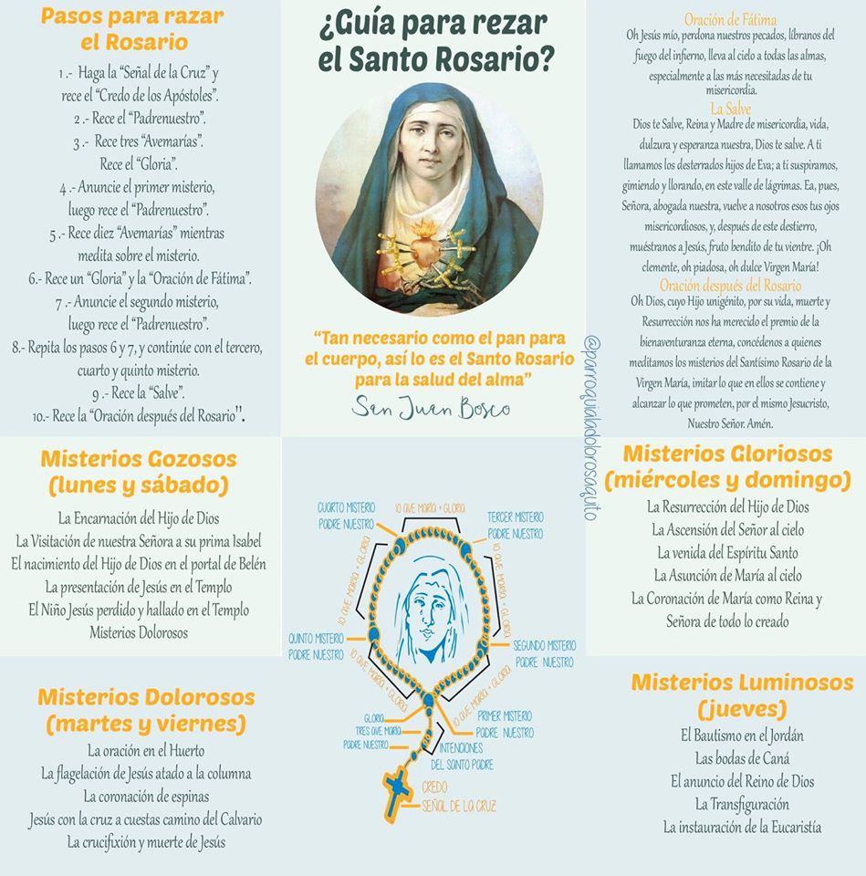

Caminando juntos en confianza y esperanza
Oremos para que la Iglesia siga apoyando, en todos los medios posibles ,
un estilo de vida sinodal, bajo el signo de la corresponsabilidad,
promoviendo la participación , la comunión.
y la misión compartida entre sacerdotes, religiosos y laicos.Intención de oración del Papa Francisco – Octubre 2024
Rezar el Rosario durante el mes de María
Un collar de rosas
El rosario es un “sombrerito” o como una corona
De hecho, en la Edad Media era costumbre coronar las estatuas de la Virgen con rosas,
cada rosa simbolizaba una oración, de ahí la palabra rosario.
Meditar sobre la historia de la Salvación
En el rezo del rosario se anuncia o medita cada misterio y le siguen diez Ave María.
Para no perder la cuenta, los fieles utilizaban un collar de ciento cincuenta granos,
llamado "patenôtre", que está en el origen de los rosarios actuales.
El rosario incluye desde hace mucho tiempo quince misterios, divididos en 3 series:
los misterios gozosos, dolorosos y gloriosos, que dieron lugar a las 150 Ave María,
que lo convirtieron en el Salterio de María. Pero Juan Pablo II añadió en 2002 cinco nuevos misterios: los misterios luminosos
los misterios gozosos, dolorosos y gloriosos, que dieron lugar a las 150 Avemarías,
que lo convirtieron en el Salterio de María. Pero Juan Pablo II añadió en 2002 cinco nuevos misterios: los misterios luminosos
